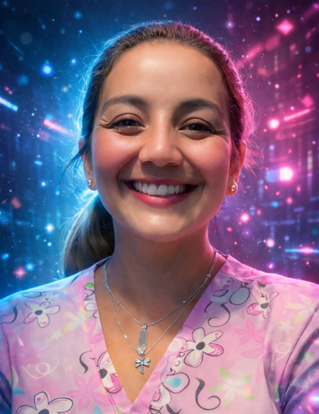
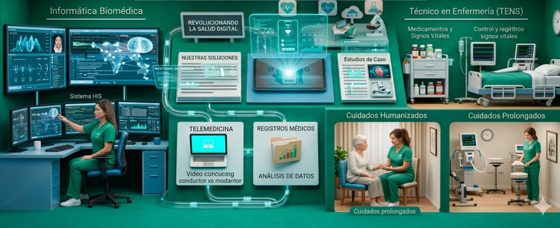
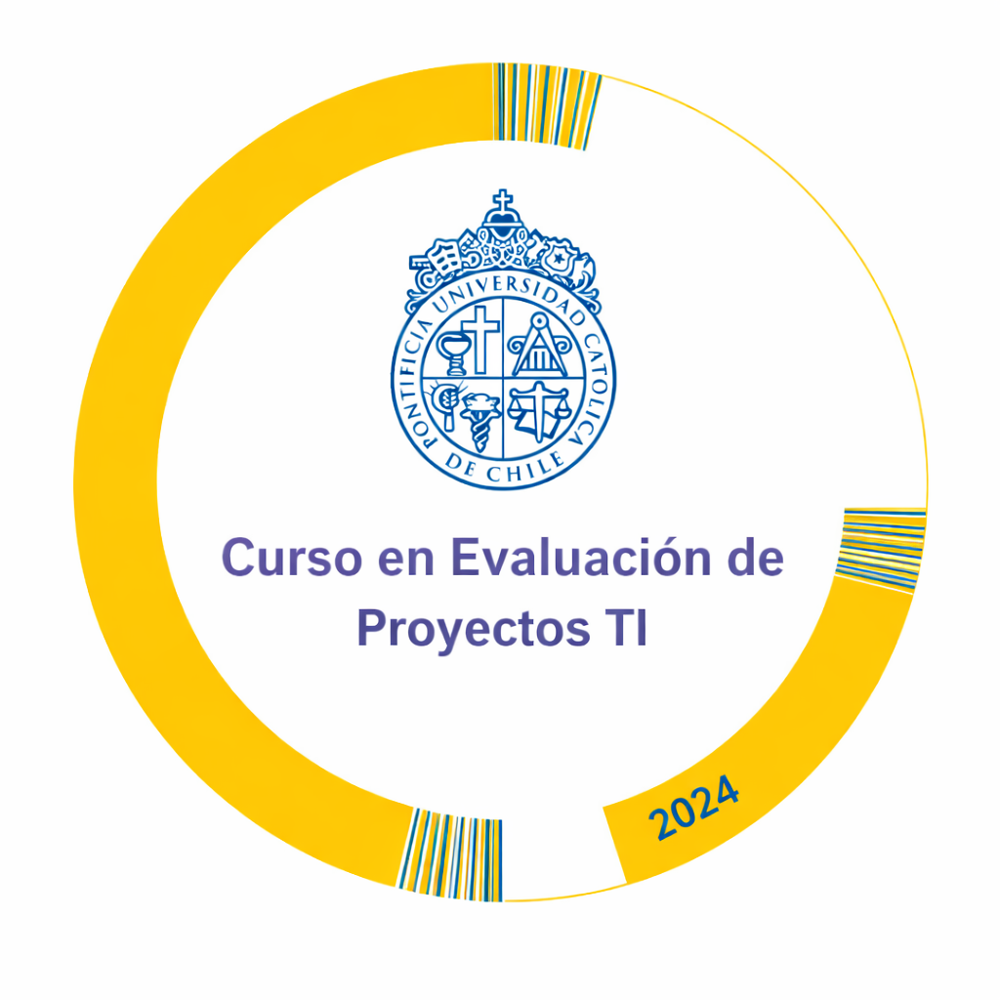

Presentación Profesional
Profesional con sólida experiencia en salud digital, interoperabilidad clínica, HIS, estándares internacionales y gestión de datos. Mi enfoque combina experiencia clínica real con competencias técnicas avanzadas.
Informática Biomédica

- HIS: TrakCare, SIDRA
- Interoperabilidad HL7 – FHIR – SNOMED CT
- Optimización de flujos clínicos
- Calidad de datos clínicos
- Capacitación y adopción digital
Técnico Superior en Enfermería

- Administración segura de medicamentos
- Curaciones avanzadas
- Oxigenoterapia
- Manejo de traqueostomía y colostomía
- Vacunación a domicilio
Evaluación de Proyectos TI – PUC

- VAN – TIR
- Flujos de caja
- Análisis de riesgos
- Priorización de iniciativas TI
Certificaciones Internacionales OPS / PAHO
- CIE‑11
- Interoperabilidad FHIR
- Sistemas de Información en Salud
- Acceso a Información en Salud
- Monitoreo APS
- Prevención de Infecciones
- IAAS
Reseñas Profesionales
“Melissa demuestra un dominio excepcional en Salud Digital, destacando por su capacidad para integrar equipos clínicos y TI con una comunicación clara y efectiva.”
“Su enfoque en interoperabilidad y calidad de datos ha permitido mejorar procesos críticos dentro del HIS. Profesional, precisa y altamente resolutiva.”
“Excelente capacidad de capacitación. Logra que equipos completos adopten nuevas herramientas digitales con confianza y seguridad.”
Contacto Profesional
📧 Email: melissazamoranolevy34@gmail.com
📱 WhatsApp: +56 9 5875 8398
🔗 LinkedIn:
linkedin.com/in/melissa-z-7713a4217
📸 Instagram:
@tens_domicilio_melissa